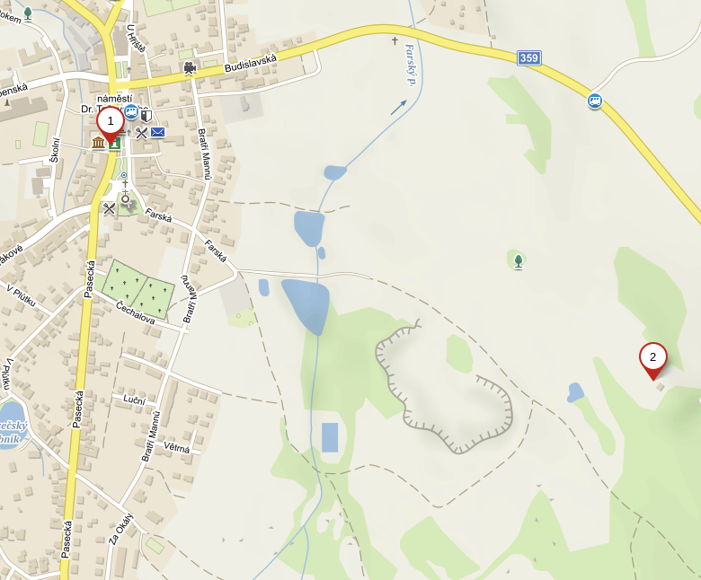

Markétka a Jirka
budou
Rejmanovi
Obřad
Vezmeme se v Pátek 16.8.2019 v 17:00 v choceňské zámecké kapli. Před obřadem se sejdeme se na nádvoří zámku.

Párty
Oslava naší svatby proběhne druhý den v Sobotu 17.8.2019 od 17:00 na skautském tábořišti u Proseče.
Rozděláme táborák, u něj zazpíváme, popijeme, zkrátka užijeme si příjemný večer pod hvězdami ;-)
Přespat bude možné pod širákem, ve stanu, a několik lidí se vejde i na srub.
Uvítáme vlastní kytary či jiné hudební nástroje vezměte s sebou.
- Parkoviště – Auta prosím nechtě v Proseči na náměstí, na srub je to krásná procházka na 15 minut.
- Tady bude oslava
Odkaz na mapu: https://en.mapy.cz/s/3ve5I

Dary
žádné dary nečekáme, úplně nám bude stačit, když přijdete a užijete si večer s námi.